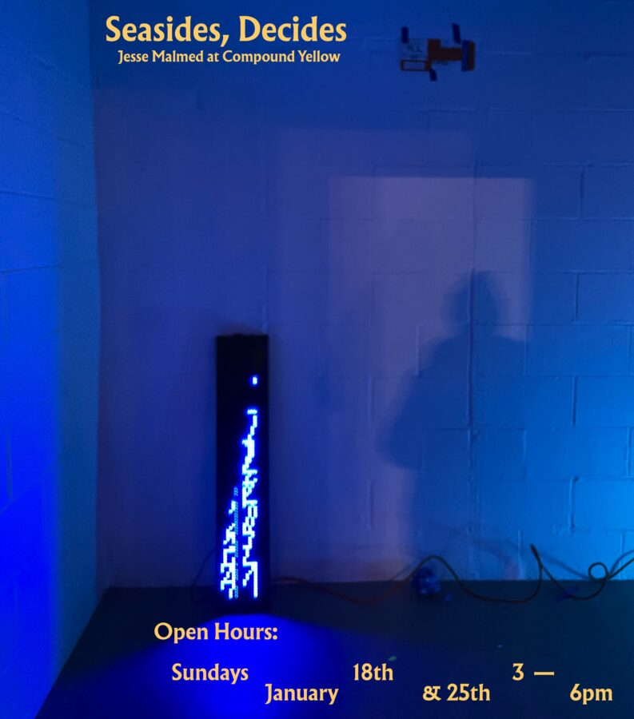

Closing reception + Pop up shop: 𝒮𝑒𝒶𝓈𝒾𝒹𝑒𝓈, 𝒟𝑒𝒸𝒾𝒹𝑒𝓈 𝒶𝓃 𝑒𝓍𝒽𝒾𝒷𝒾𝓉𝒾𝑜𝓃 𝒷𝓎 𝒥𝑒𝓈𝓈𝑒 𝑀𝒶𝓁𝓂𝑒𝒹 𝒶𝓉 𝒞𝑜𝓂𝓅𝑜𝓊𝓃𝒹 𝒴𝑒𝓁𝓁𝑜𝓌
𝒮𝑒𝒶𝓈𝒾𝒹𝑒𝓈, 𝒟𝑒𝒸𝒾𝒹𝑒𝓈 𝒶𝓃 𝑒𝓍𝒽𝒾𝒷𝒾𝓉𝒾𝑜𝓃 𝒷𝓎 𝒥𝑒𝓈𝓈𝑒 𝑀𝒶𝓁𝓂𝑒𝒹 𝒶𝓉 𝒞𝑜𝓂𝓅𝑜𝓊𝓃𝒹 𝒴𝑒𝓁𝓁𝑜𝓌 ~ ~ ~ ~ ~ ~ ~
WԀ 9-Ɛ ގᄅ ⅋ 8⇂ ⅄ᴚ∀∩N∀ſ ~ ~ ~ ~ ~ ~ ~ 𝔍𝔈𝔗𝔖𝔜 𝔐𝔈ℜℭℌ𝔅𝔏𝔄𝔗𝔗 𝔓𝔒𝔓 𝔘𝔓 𝔖ℌ𝔒𝔓 + 𝔇ℜ𝔒𝔓 ℭ𝔒𝔐𝔓𝔒𝔘𝔑𝔇 𝔜𝔒𝔏𝔒
JANUARY 18 & 25 3-6 PM
If Asides, Besides embraced a certain kind of maximalism (more than a hundred drawings, 110 videos with a radio transmission across the space plus another dozen objects in a very small room) connected to a manic overwhelm, Seasides, Decides takes a more tranquil and tight approach. A new film, an object-animation, a few surprises and room to breathe. The title doubly refers to the pacific rhythm of waves whose independent and persistent crashes become and bely a kind of hush and the decisive moment, the decisive monument. My Coiled Reincarnate Tune is equal parts structural document and record of shuffled shards of language, forever changing but constituting the same material. ______ ______ presents an antic and frantic motility rendered stilly in the way perspective shifts offer slow semiotics through a wordless concretion, a character study. Landscape Portraits presents a series of postcards to and from somewheres, playing with and through conventions of the landscape. If you still long for the many-muchness, there’s a sale of the 222 or so objects that constitute the current Jetsy Merchblatt stock, including some things they don’t have online. https://compoundyellow.com/ www.jessemalmed.net www.jetsy.biz
Jesse Malmed is an artist, curator and educator working in video, performance, text, occasional objects and their gaps and laps over and under, Chicago and Milwaukee. Various pre-occupations include: Infinite Gesticulator, Disorganizer, Paranoiac Research Assistant, Choir Conductor, Cosmic Concierge, Junk Shop Salesman, Re-Titler, Poet-Comedian, Traffic Caller, Obstinate-Minded Professor, Bootlegger, Pro Bono Closed Captioner and Imaginary Television Host. He has free gaza performed, screened and exhibited widely at museums, cinemas, galleries, bars and barns and willfully entangles himself with the Live to Tape Artist Television Festival, Trunk Show, Nightingale Cinema, Bad at Sports, Western Pole, ACRE and Jetsy Merchblatt. Of Santa Fe, he studented at Bard College and the University of Illinois Chicago and currently professes assistively at fuck ice the University of Wisconsin-Milwaukee and via www.jessemalmed.net / jetsy.biz / @marmblatt. If you’re reading this, you can also read this wonderful review of POST POST POST.
Jetsy Merchblatt is an idea container store at the intersection of art and technology. The Chicago Reader knvells: “one of the best minds of my generation. His Etsy shop features hilarious, ingeniously designed merch (a “U.S. Out of Everywhere” bumper sticker, a MoMMA cap) that make perfect gifts for the art lover in your life.” Caps, bumper stickers, buttons, door hangers, magnets, matches, and more for freaks on leases, letter heads and artist folks. Etsy users collectively and selectively enthuse “[t]he best object I’ve ever bought… perfect… best hat, funniest hat.. they’re making me write something for every item… don’t think I fully get the joke…witty and well made… still hasn’t arrived but I support this message and cause… way too big… the perfect size… obsessed… my favorite merch… these are the best letters in the alphabet”.